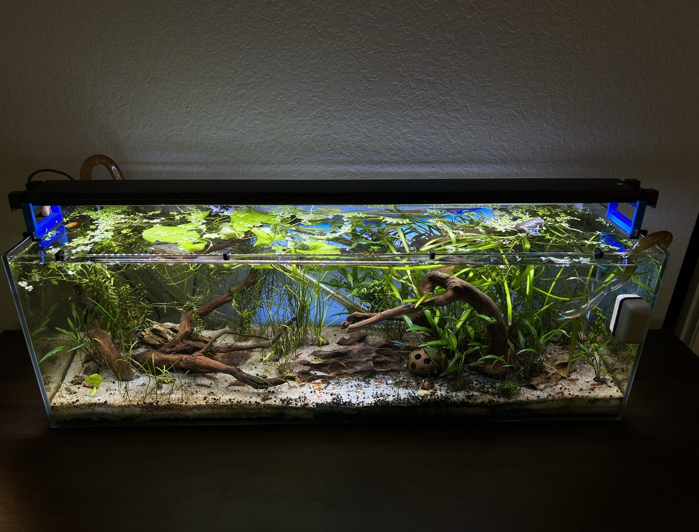
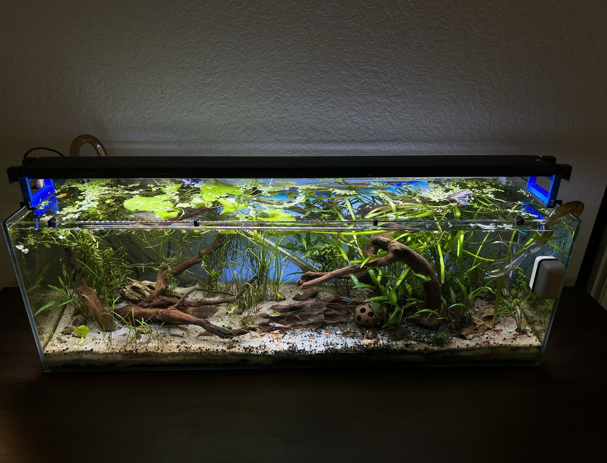

About me
With 12+ years of hands-on experience, I'm passionate about creating thriving and healthy aquariums that go beyond expectations. From choosing compatible fish species to maintaining optimal water conditions and lush plant environments, I've found joy in the delicate balance of this hobby. If you share my enthusiasm for aquariums, feel free to reach out—I'm always happy to discuss and share insights about the fascinating world of fish tanks!
Tip #1 - Determine the size of aquarium you can reasonably have
When choosing an aquarium, it is crucial to consider the size and weight. The weight of the tank itself, the decorations, any substrate, and even the water have to be accounted for. It is very common for beginners to start with a 10 gallon aquarium.
It is easy for a 10 gallon aquarium to weigh in excess of 100lbs! Be sure to have a sturdy piece of furniture, or purchase a stand specifically made to hold large amounts of weight for an extended duration of time.
Tip #2 - Consider the temperament of your fish
You can NOT put two male betta fish together! However, while this may be common knowledge for some, there are actually many more fish that don't get along well together. It is very important to do research on specific species of fish that you plan on adding to your aquarium.
I have a single honey gourami, 6 green neon tetras, 12 pygmy corydoras, a nerite snail, assassin snails, Malaysian trumpet snails, and red cherry shrimp (Neocaridina Davidi).
I highly advise speaking to an expert at your local fish store, or researching each species in detail prior to adding them. It is never fun to watch your fish friends pick on each-other!
Tip #3 - Test your water before adding life!
Water parameters are key to a healthy aquarium. The Nitrogen Cycle is something that every fish keeper must learn like the back of their hand! This is the natural process of waste being broken down into nutrients that the plants can use to grow. As a result, this can help keep the water clean
An aquarium is basically a little ecosystem, and things like the Nitrogen Cycle, water quality, lighting, feeding, and heating are all factors that play a role in the health of an aquarium.
Tip #4 - Be sure to have a TON of plants!
Plants are (in my opinion) essential to aquariums. Live plants will help break down waste and nitrates in the water. Not only are aquatic plants very pretty, many of them are also very easy to grow!
Stem plants can be propagated simply by trimming them when they get long, and planting the trimmings right back into the substrate.
Tip #5 - LET IT SIT
It is best to let an aquarium "sit" after setting it up. What this means, is adding the substrate, decorations, plants, filter, heater, and light, and then waiting a few weeks (sometimes up to a month!) for the water quality to be juuuust right.
By properly completing this step, by the time you are ready to add fish you will have a healthy ecosystem and your new fish will be very happy!

Want to learn more about my Aquariums? Click below!
View some of my favorite aquarium products here

Check out my aquarium blog!

Photos of my current aquarium projects
 
